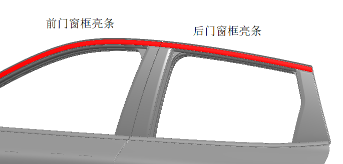
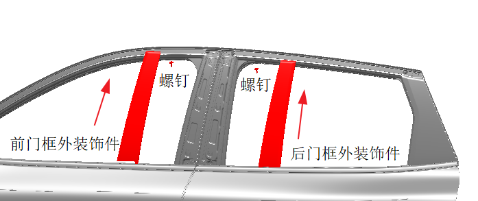
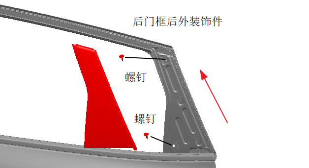

拆卸门框外装饰板
拆下前后门的窗框装饰亮条，参见 拆卸和安装侧围窗框装饰亮条总成和 。

用内六花螺丝刀拆下1颗螺钉，将左侧的前门框外装饰件沿箭头方向往上滑动，即可拆下该前门框外装饰件。右侧的拆卸方式同左侧。
用内六花螺丝刀拆下1颗螺钉，将左侧的后门框外装饰件沿箭头方向往上滑动，即可拆下该后门框外装饰件。右侧的拆卸方式同左侧。

用内六花螺丝刀拆下2颗螺钉，将左侧的后门框外装饰件沿箭头方向往上滑动，即可拆下该后门框后外饰件。右侧的拆卸方式同左侧。

安装门框外装饰板
安装方式与拆卸方式相反。